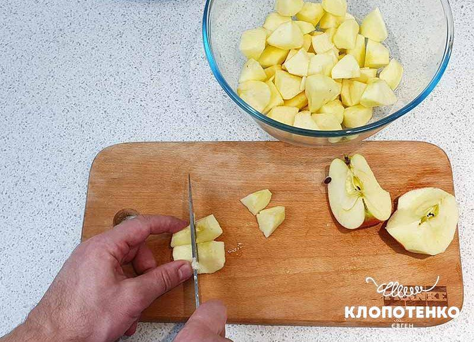
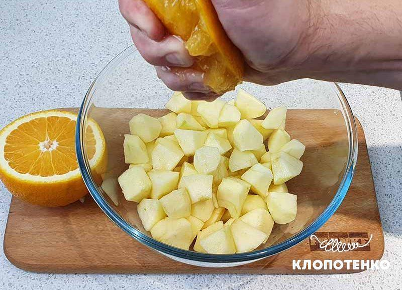
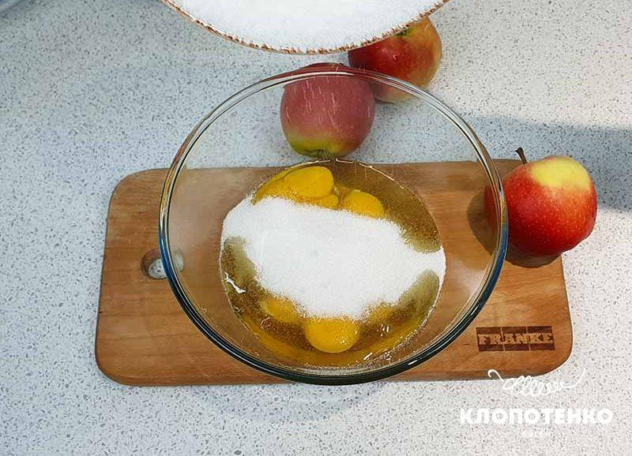
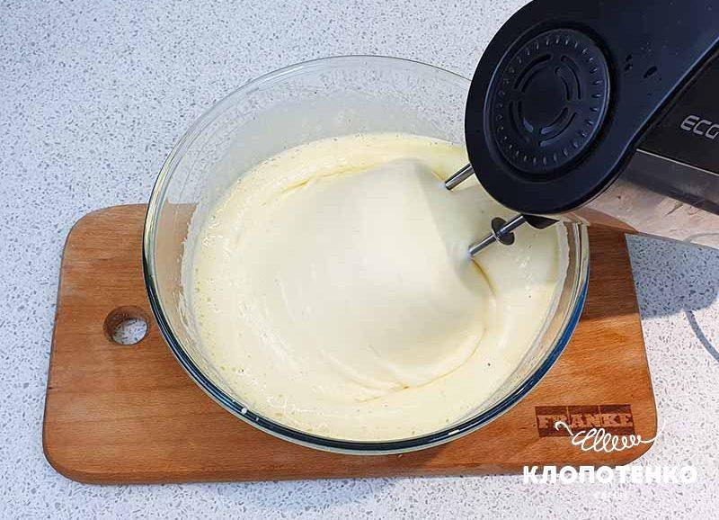
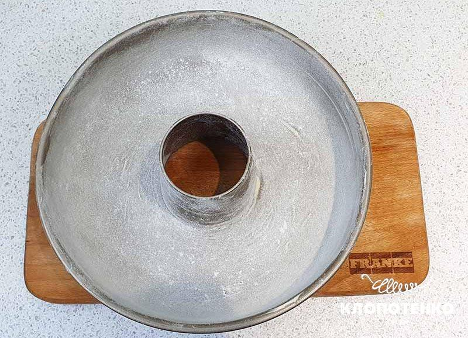
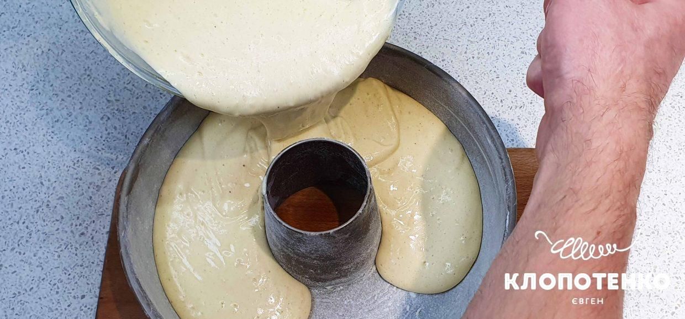
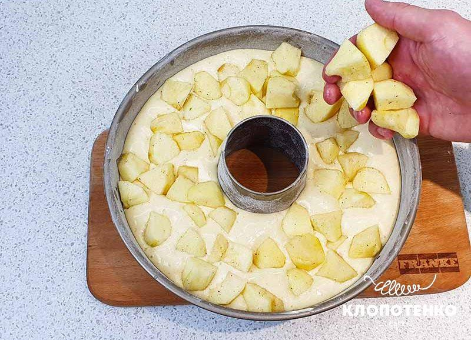

Рецепт вкусной шарлотки с яблоками

Шарлотка – пирог, который узнаете из тысячи даже с закрытыми глазами. Стоит один раз попробовать невесомый бисквит с хрустящей корочкой и нежными на вкус яблоками внутри, как он навсегда останется в памяти. Готовить шарлотку невероятно просто, а все ингредиенты вы, скорее всего, найдете дома.
СЕКРЕТЫ ПРИГОТОВЛЕНИЯ ШАРЛОТКИ
Для приготовления шарлотки выбирайте твердые и сочные яблоки, тогда пирог получится очень вкусным. Количество сахара можете регулировать на свой вкус. Если добавите больше, чем указано в нашем рецепте, получите более хрустящую корочку, которая будет немного отслаиваться от самого пирога. Резать такой пирог будет не просто, так как он будет сильно крошиться. Усилить вкус пирога помогут пряности. По желанию добавьте немного молотой корицы, имбиря, мускатного ореха и цедру одного апельсина.
КАК ПРИГОТОВИТЬ ШАРЛОТКУ
Ингредиенты:
-
2-3 яблока
-
2 ст. л. апельсинового сока
-
5 яиц
-
200 г сахара
-
200 г муки
-
20 г сливочного масла (для смазывания формы)
-
10 г ванильного сахара
-
1 щепотка соли
ВСЕГО 30 МИНУТ. РЕЦЕПТ ВКУСНОЙ ШАРЛОТКИ С ЯБЛОКАМИ: ПОШАГОВЫЙ РЕЦЕПТ
-
Приготовьте все ингредиенты для шарлотки. Включите разогреваться духовку до 180 градусов. Начните приготовление пирога с начинки. Возьмите 2-3 яблока, помойте, очистите от кожуры, удалите семена и плодоножку. Нарежьте сначала на дольки, а потом на кусочки одинакового размера. По желанию можете не срезать кожуру.

-
Переложите яблоки в глубокую миску и сбрызните 2 ст. л. апельсинового сока, чтобы они не потемнели. Если нет апельсинового сока, используйте лимонный. После добавьте в яблоки 5 г ванильного сахара. Отставьте их пока.

-
Готовьте тесто для шарлотки. Возьмите большую миску и вбейте в нее 5 яиц. Добавьте к яйцам 200 г сахара, 5 г ванильного сахара и щепотку соли. По желанию, количество сахара можете уменьшить на 40% либо увеличить, исходя из своих вкусовых предпочтений.

-
Взбейте миксером яйца с сахаром. Яично-сахарная масса должна побелеть и увеличиться в объеме в 3-4 раза.

-
Аккуратно введите 200 г муки и перемешайте силиконовой лопаткой. Делайте это до тех пор, пока мука полностью не вмешается в тесто.

-
Возьмите форму для выпекания 26 см. Сделайте «французскую рубашку»: форму смажьте 20 г сливочного масла и слегка посыпьте мукой, остатки муки высыпьте. По желанию используйте разборную форму для выпекания, застелив дно пергаментной бумагой и так же смазав сливочным маслом и присыпав мукой.

-
Выложите в форму тесто, разровняйте его лопаткой по всей площади формы.

-
Сверху на тесто равномерным слоем выложите яблоки. Выпекайте шарлотку в духовке при 180 градусах 30 минут в режиме конвекции. После приготовления оставьте пирог остывать в форме. При желании посыпьте шарлотку сахарной пудрой, но делайте это только после полного остывания пирога, иначе сахарная пудра растает.

Ссылка на видео-рецепт